CS184/284A Spring 2025 Homework 2 Write-Up
Link to webpage: https://cal-cs184-student.github.io/hw-webpages-kkboomer
Link to GitHub repository: https://github.com/cal-cs184-student/hw2-meshedit-for_gabe
Overview
In this HW I implemented a basic pipeline for rendering simple Bezier curves/surfaces, as well as gained experience with meshes and how to manipulate them to achieve better lighting and detail through edge manipulation and upscaling. I had a lot of fun with this homework and to be honest it was nto too hard since a lot of the later parts were simple pointer manipulation. Also, this is the first major project I had to migrate computers for (my windows laptop could not render task 2 so ty CachyOS for saving me :) ).Section I: Bezier Curves and Surfaces
Part 1: Bezier curves with 1D de Casteljau subdivision
The de Casteljau algorithm evaluates a Bezier curve by repeatedly performing linear interpolation between a set of control points. At each step, interpolation is performed between neighboring points, producing a new set of points that is one element smaller than the previous set. process continues until only a single point remains, which represents the evaluated point on the Bezier curve for a given parameter t.
To implement, we create a std::vector
which we will return. We then iterate
through the given points and perform a linear interpolation between 2 neighboring points, which gives us a
point
that lies between them, which we insert into nextPoints. The vector we return is exactly one
point
less than was passed in, which means that when this function is repeatedly called, we can eventually get a
single
control point that can determine the path of the given curve. Note that the function written for this task
only
performs
1 step of the algorithm, so hitting the E key calls this function until 1 point is left.
Here is the custom curve I created with 6 points and all levels
|
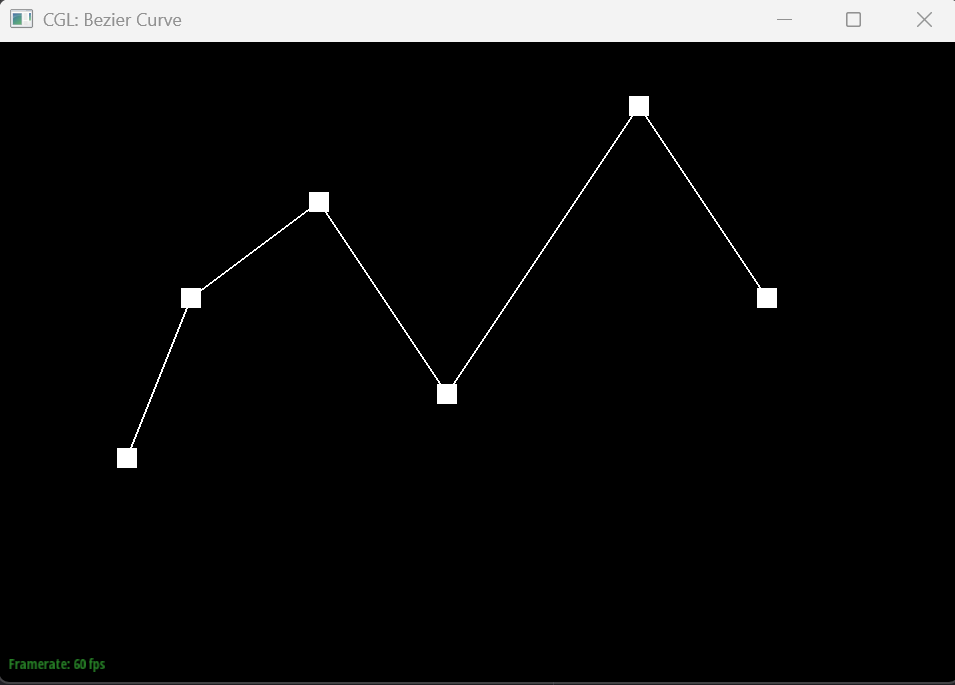 |
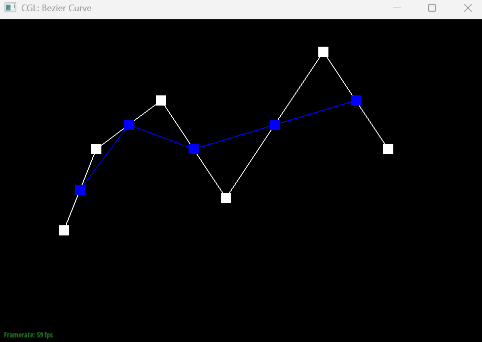 |
|
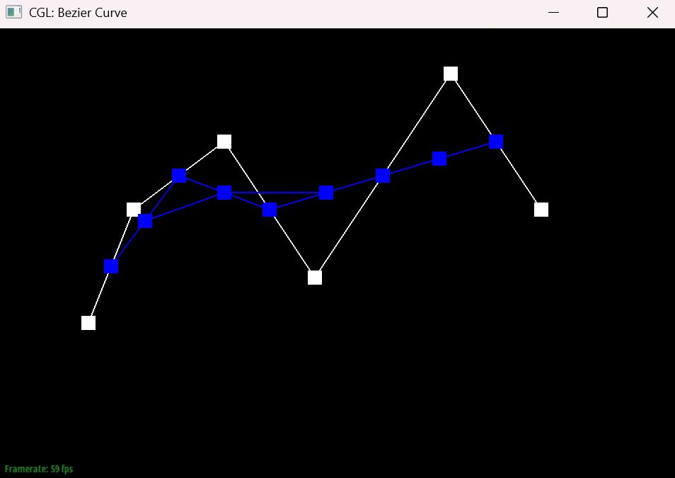 |
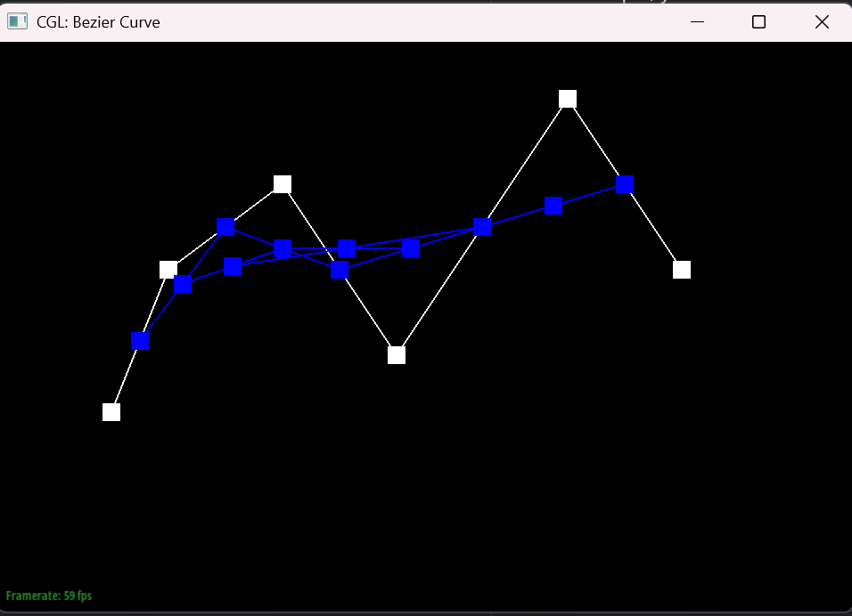 |
|
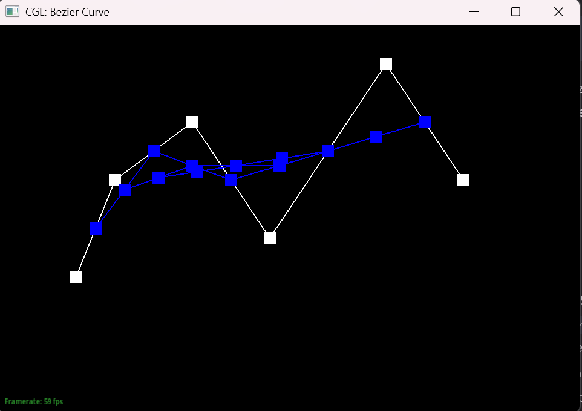 |
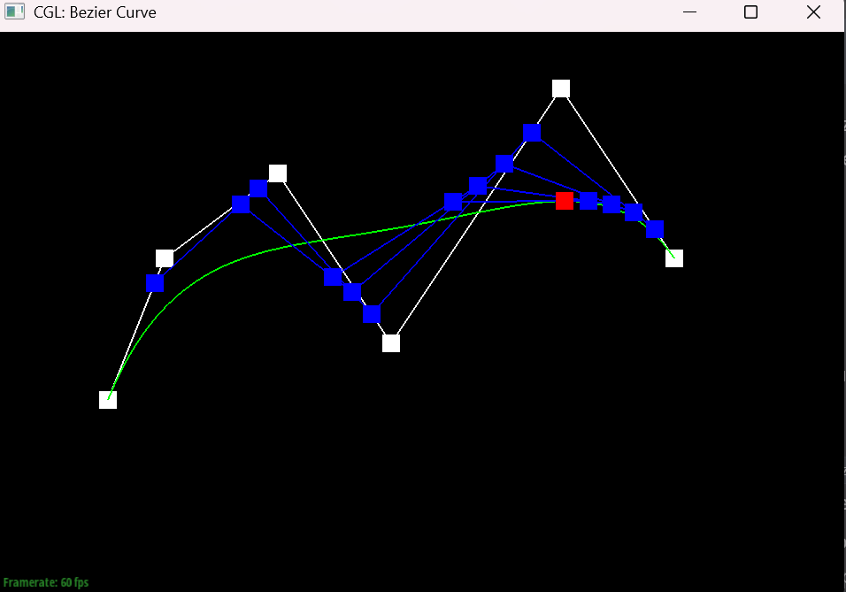 |
|
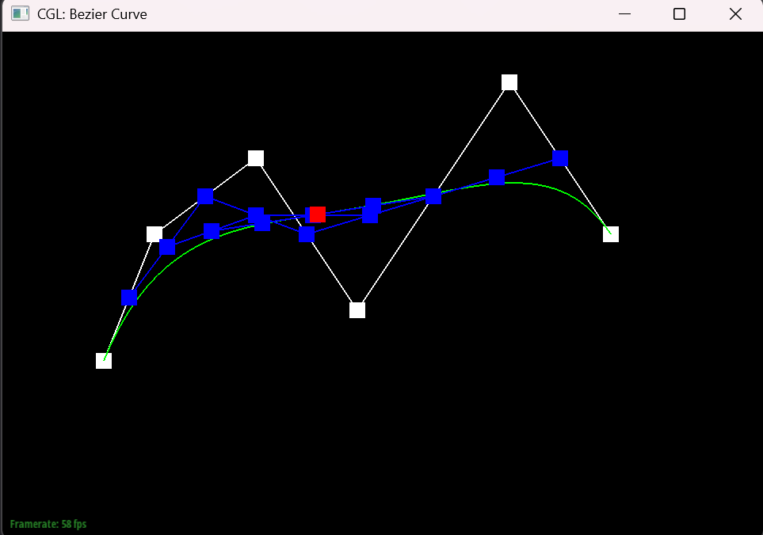 |
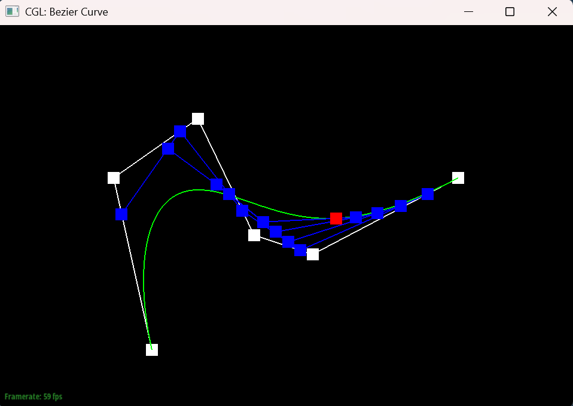 |
Part 2: Bezier surfaces with separable 1D de Casteljau
de Casteljau’s algorithm can be extended to Bezier surfaces by performing the interpolation process in two
parametric directions. A Bezier surface is defined by a grid of control points, and is parametrized by
parameters \(u\) and \(v\).
We first create a std::vector
to store the result of our first round of de Casteljau,
then for every control point in the mesh we call our Vector3D BezierPatch::evaluate1D(std::vector
with respect to u. In this function, we reserve std::vector
that starts 1
element smaller than the input vector. We then continually call evaluateStep(newPoints, t),
which
performs linear interpolation between neighboring points until newPoints.size == 1. This
produces
a set of intermediate points of each row at parameter u, which essentially squishes down the surface into 1
bezier curve.
To finish we just call Vector3D BezierPatch::evaluate1D(...) one last time with respect to v,
returning the final evaluated point on the Bezier surface.
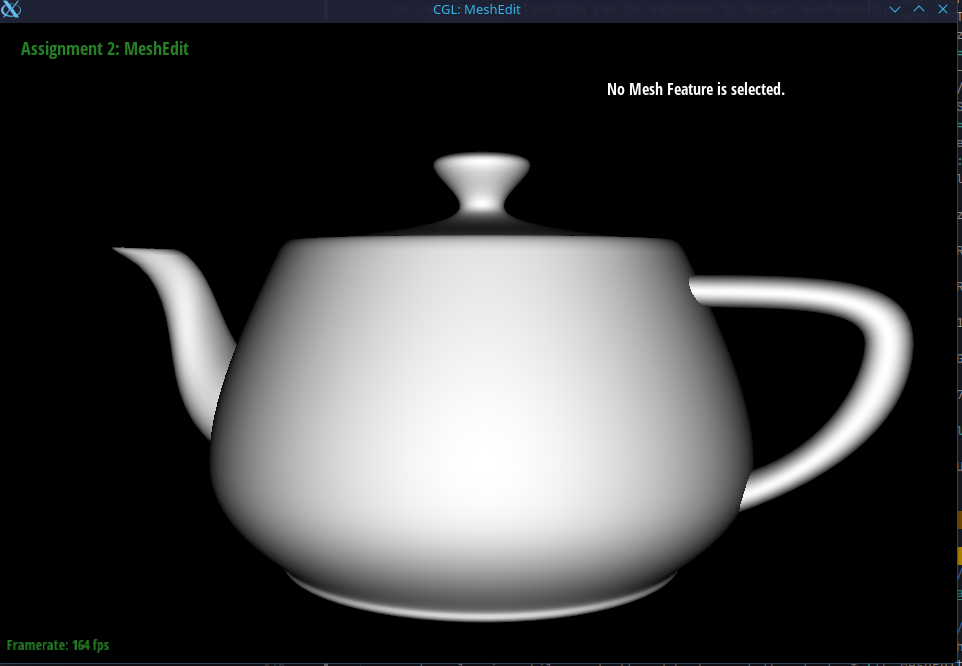
Section II: Triangle Meshes and Half-Edge Data Structure
Part 3: Area-weighted vertex normals
We first initialized a vector L representing the accumulated normal at the vertex.
We then initialize a HalfEdgeIter h and start to move through all the halfedges associated with
this
vertex, looping while we don't end back up at the start. In this loop we get positions p0
(current position), p1 (one vertex ahead), and p2 (2 vertices ahead) by grabbing the vertex
positions. Then by calculating vectors Vector3D e1 = p1 - p0 and Vector3D e2 = p2 - p0, we get 2 vectors,
which
we take the cross product \(e1 \times e2\) and add to L. This cross product is orthogonal to both e1 and e2
and
proportional to
the area of the triangle that the 3 vertices enclose, so adding it to L contributes to the area weighted
contribution
of each neighboring face. After the loop is finished, we normalize L and can return an area weighted normal
at a
given vertex.
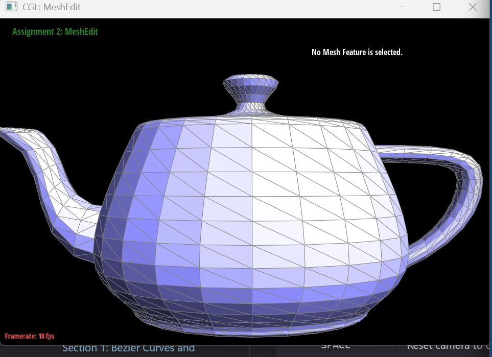
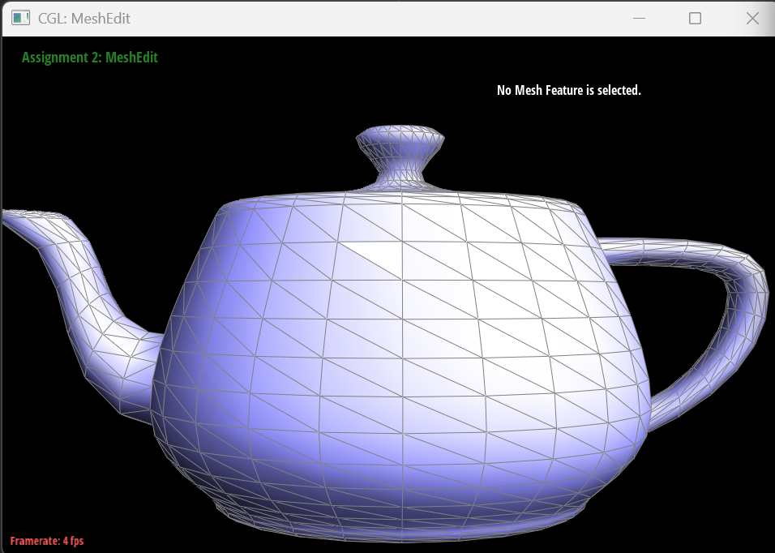
Part 4: Edge flip
I began by labeling all vertices, edges, halfedges, and faces around the edge being flipped.
I assume the edge to be flipped lies between vertices B and C, and label the surrounding
vertices A and D accordingly. This labeling makes it easier to track how connectivity
changes after the flip.
Before performing the flip, I check whether either face adjacent to the edge is a boundary
face. If the edge lies on the boundary, the flip is aborted because flipping would require
two valid neighboring triangles, which do not exist at the boundary.
To perform the flip, I update the vertices that the halfedges bc_h and
cb_h (bc_h->twin()) point to, changing them from B and C to A and D
respectively. Conceptually, this replaces the diagonal BC with the new diagonal AD,
so I relabel these halfedges as ad_h and da_h for clarity.
Next, I call HalfedgeMesh::setNeighbors on each halfedge to update their
next, twin, edge, face, and
vertex pointers so that the mesh connectivity reflects the flipped edge.
Finally, I update the primary halfedge for each face, reassign the halfedge associated
with the flipped edge e0, and ensure each vertex points to a valid outgoing
halfedge. After all connectivity is updated, the edge flip operation is complete and the
edge iterator is returned.
|
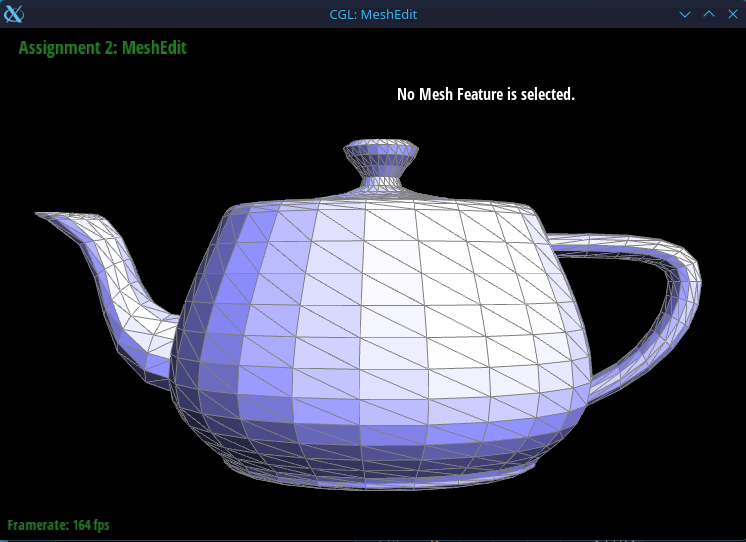 |
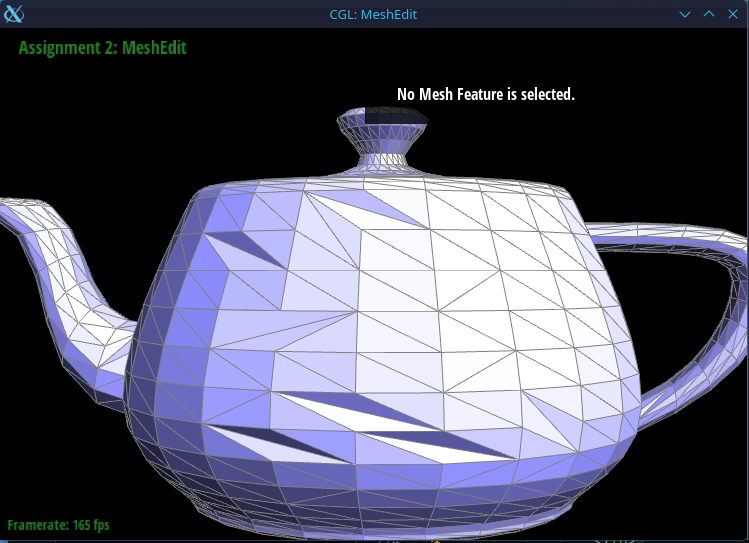 |
|
|
Part 5: Edge split
Similar to task 4, I start by labeling every vertex, halfedge, and face that is associated with the passed in edge. We then check if the edge is a boundary, of which there are 2 cases.
- Case 1: it is a boundary (EC):
-
Case 2: It is not a boundary: This is the most common case; we create the midpoint m as a new
VertexIter, and compute its position as \( m.position = 0.5 * (b.position + c.position) \). I then initialize the new edges, halfedges, and faces that are created from the split, labeling them in a similar fashion to how I did the existing elements (f# for faces, (start vertex)(end vertex)_h for halfedges, and (start)(end) for edges). After deciding where to assign the faces (see figure for how I decided to lay out the split), we go face by face and callhalfEdgeMesh::setNeighbors(...)on each half edge that will border that face and set its respective elements. We then finish by setting each of the faces', new edges', and vertices' respective half edge before returning the midpoint.


In terms of debugging, Similar to Task 4, I did not know of
halfEdgeMesh::setNeighbors(...), so the function was a gargantuan 125 lines long since
I did manual pointer management, but after implementing the function, it is now under 80 lines (back to over
100
since I decided to go for the EC).
I also experienced some bugs when flipping newly split edges, as they would flip underneath other edges, but
it seems like a quirk of the rendering and not something that may cause any errors.
Part 6: Loop subdivision for mesh upsampling
The structure of my implementation closely followed the staff suggested flow.
First, I iterate through every vertex in the mesh and compute its new position
according to the Loop subdivision rule. For each vertex, I determine its degree
(number of neighboring vertices). If the degree is 3, I use
u = 3/16, otherwise I use u = 3/(8n) where n
is the vertex degree. The new vertex position is computed as a weighted
combination of the original vertex position and the positions of its neighboring
vertices. These values are stored in Vertex::newPosition, and each
original vertex is marked with isNew = false.
Next, I compute the new positions associated with each edge. I create a
std::vector to store all edges in the mesh
before subdivision so that newly created edges are not processed again later.
For each edge, I obtain its halfedge and identify the four vertices involved
(two vertices on the edge and two opposing vertices from the adjacent faces).
Using these vertices, I compute the edge midpoint position using the Loop rule
\( \frac{3}{8}(A + B) + \frac{1}{8}(C + D) \)
where A and B are the endpoints of the edge and C and D are the opposing
vertices from the two neighboring triangles. This value is stored in
Edge::newPosition, and the edge is marked as an original edge
(isNew = false) before being added to the originals
vector.
After computing all vertex and edge positions, I split every edge in the
originals vector using splitEdge(). This operation
returns the newly created midpoint vertex. I mark this vertex as new by setting
midpoint->isNew = true and assign both its
position and newPosition to the value stored in the
edge's newPosition.
Next, I flip any edge that connects an old vertex and a new vertex. I iterate
through all edges in the mesh, obtain the vertices of each halfedge and its
twin, and check whether exactly one of them is new. If the edge itself is marked
as new and its vertices have different isNew values, I call
flipEdge(e) to enforce the correct connectivity required by Loop
subdivision.
Finally, after all topological changes are complete, I update the mesh geometry
by setting each vertex's position to the value stored in
newPosition.
When repeatedly applying Loop subdivision to cube.dae, the cube
gradually becomes slightly asymmetric. This happens because the triangulation
of each face introduces diagonals that are not arranged symmetrically across
the cube. As subdivision proceeds, these small asymmetries are amplified by the
vertex averaging process, causing the cube to deform unevenly. To reduce this
effect, the cube can be preprocessed by performing edge flips so that the
diagonals on each face are arranged symmetrically before subdivision. This
ensures that the subdivision process treats each face consistently and helps
preserve the cube’s symmetry over multiple iterations.